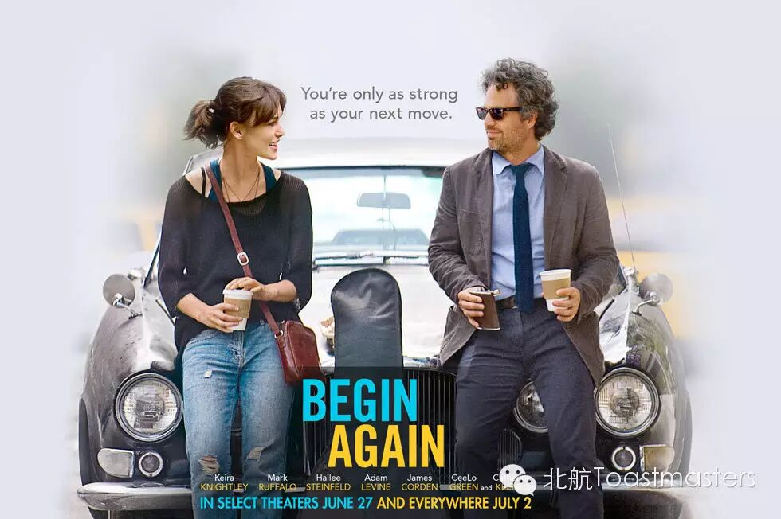
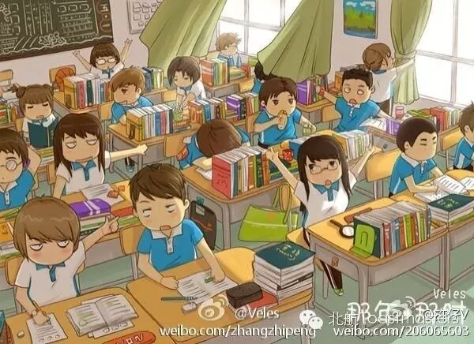
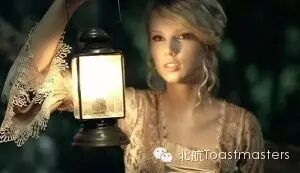

Begin Again
TM：Sophie
TTM：Han

One of the best things in our lives is --begin again. It is about finding a new life, a new future, and a new self. Everyday, there are thousands of people who start a new journey, and do things they’ve never done before. Do you have the courage to begin again? Sometimes, it is not easy to do so. But do remember, it will never be too late.
Jonh CC2 My Deskmate

Still remember your deskmate? Boy or girl?Did you guys ever share some secrets with each other? Have you ever copied your deskmate’s homework? For everyone, deskmate is always a special person, since we have spent so much time together. I’m sure John must prepared a great deal funny stories to tell you. Hurry to come!
Summers CC4 Love Story

“We were both young when I first saw you, I close my eyes and the flashback starts…” when we talk about love, we are talking about stories. Gone with the wind, Romeo and Juliet, Prideand prejudice… These love stories are far away from our lives. So I am really looking forward to this love story. Will it be Summers’ puppy love?
Joshua CC5 Drop of Honey
“A man clings to a tree branch after falling off of a cliff. But the tree is too weak to carry his weight. He could fall and die at any moment. In such a situation,the only thing he does is trying to taste the honey on a branch.” This is fable about the meaning of life. Do you get the point in it? This night, Joshua will share some ideas with you.
Toastmasters International (TI) is a nonprofit educational organization that operates clubs worldwide for the purpose of helping members improve their communication, public speaking, and leadership skills.

https://mp.weixin.qq.com/s/u57Wl4TZufdSKe7Wem7wRA
本页为抢救式本地归档，图文已永久保存。